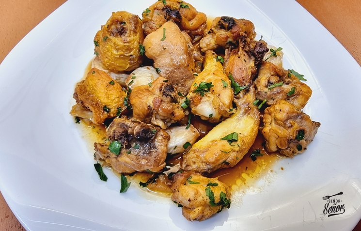
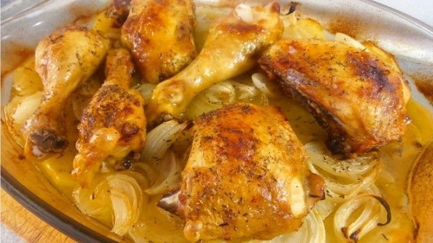
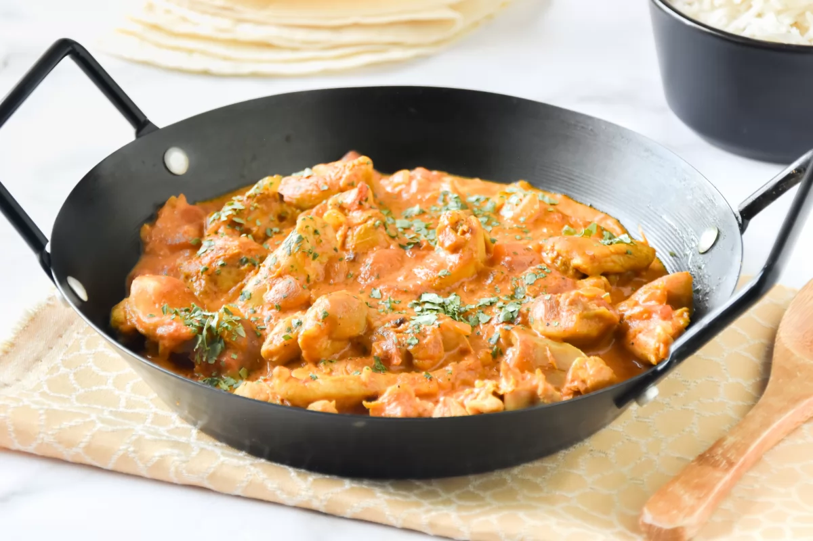
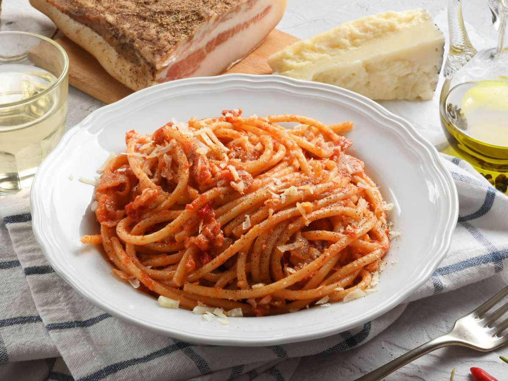
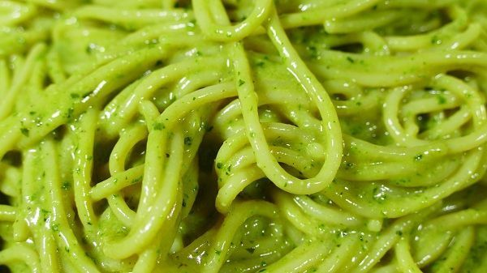
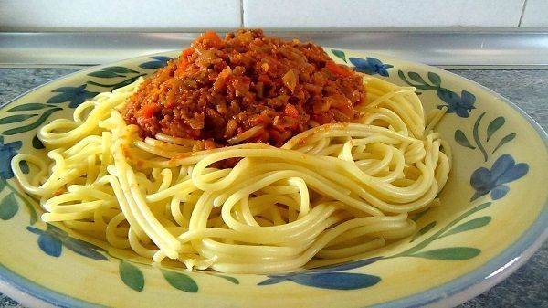

receta con pollo

ingrediente pollo al ajillo
- 1 pollo de corral troceado (unos 2 kg. aproximadamente)
- 8 dientes de ajo
- 1 hoja de laurel
- 300 ml. de vino de Jerez o de un vino blanco
- Hierbas aromáticas: 1 ramita de romero fresco y tomillo (al gusto)
- 100 ml. de aceite de oliva virgen extra
- 2 g. de pimienta negra recién molida (al gusto de cada casa)
- 6 g. de sal fina (o al gusto de cada casa)

Ingrediente pollo al horno con patatas y cebolla
- 1 pollo entero o 4 muslos completos (cuartos traseros)
- 4 patatas medianas
- 4 cebollas medianas
- aceite de oliva
- sal y pimienta
- Tomillo seco

Ingredientes del pollo al curry
- 100 g de cebolla
- 2 dientes de ajo
- 1 cucharada de jengibre rallado
- 10 g de mantequilla
- 1 cucharadita de sal
- 1 cucharada de curry en polvo
- 400 g de contramuslos de pollo (o pechugas de pollo)
- Pimienta negra molida
- 200 g de tomates envasados
- 200 ml de leche de coco
- 1 cucharada de hojas de cilantro
receta con pastas

Ingrediente Espaguetis a la Amatriciana
- 400 g de espaguetis
- 150 g de guanciale o bacon
- 400 g de tomates pelados
- 100 g de queso Pecorino Romano rallado
- Un toque de chile rojo
- Una cucharada de aceite de oliva
- Sal y pimienta

Ingrediente Espaguetis al pesto
- 400g de espaguetis
- 150g de hojas de albahaca. No incluyas el tallo, que amarga
- 300g de queso parmesano
- 2 dientes de ajo
- 100g de piñones
- 200ml de aceite de oliva
- Sal

Ingrediente Espaguetis a la boloñesa
- 400g de espagueti
- 1 cebolla
- 2 zanahorias
- 1 hoja de apio
- 250g de carne picada de ternera y/o de cerdo
- 500g de tomate natural triturado. O 7 enteros. Siempre sin la piel
- 1/2 vaso de vino tinto o blanco
- 1/4 de vaso de leche
- 1 cucharadita de orégano
- sal y pimienta
- Aceite de oliva